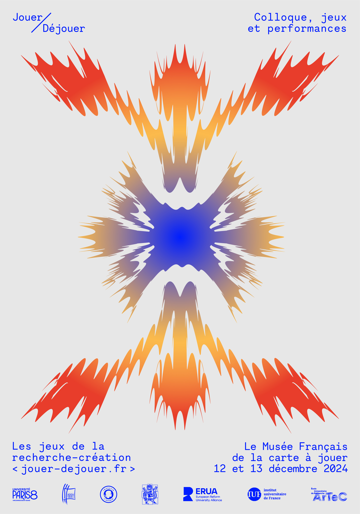
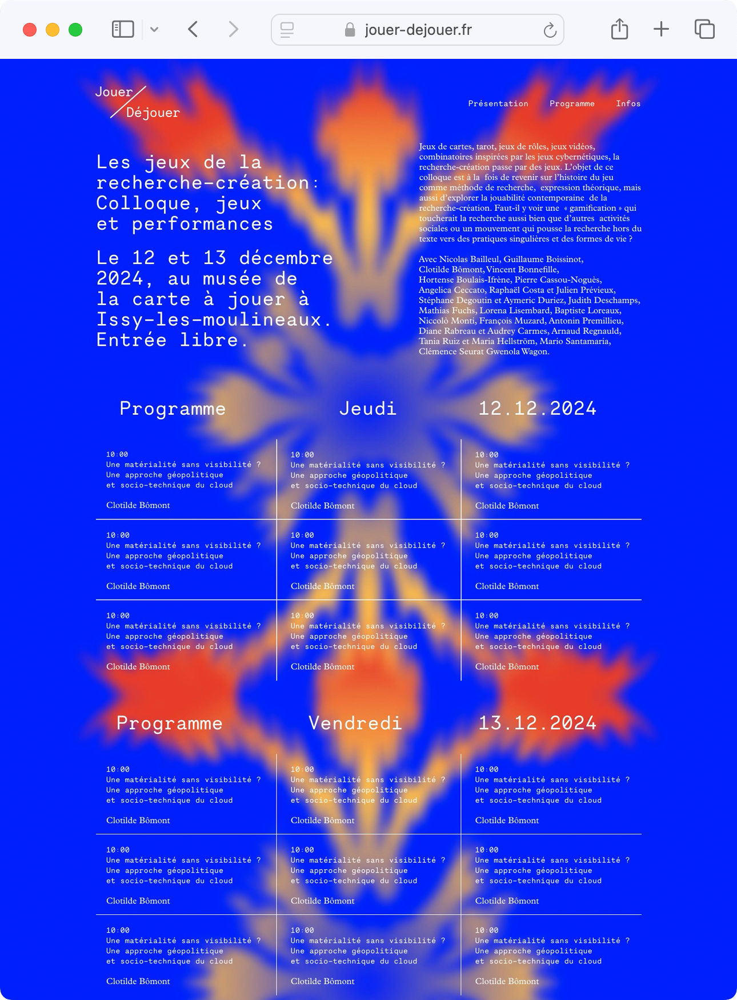
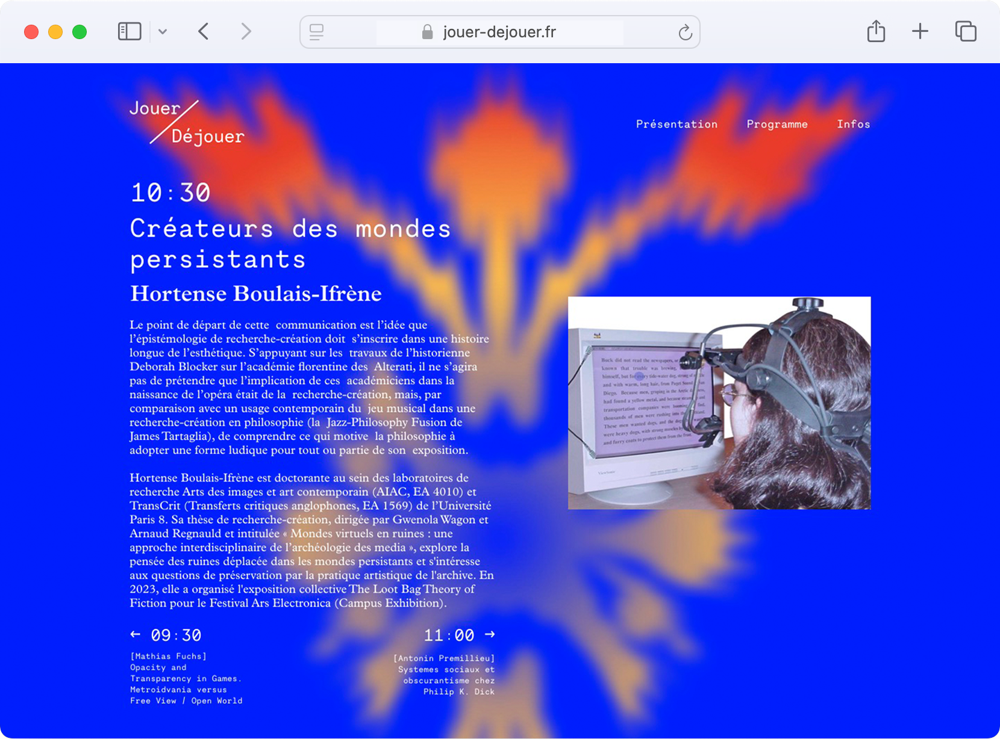
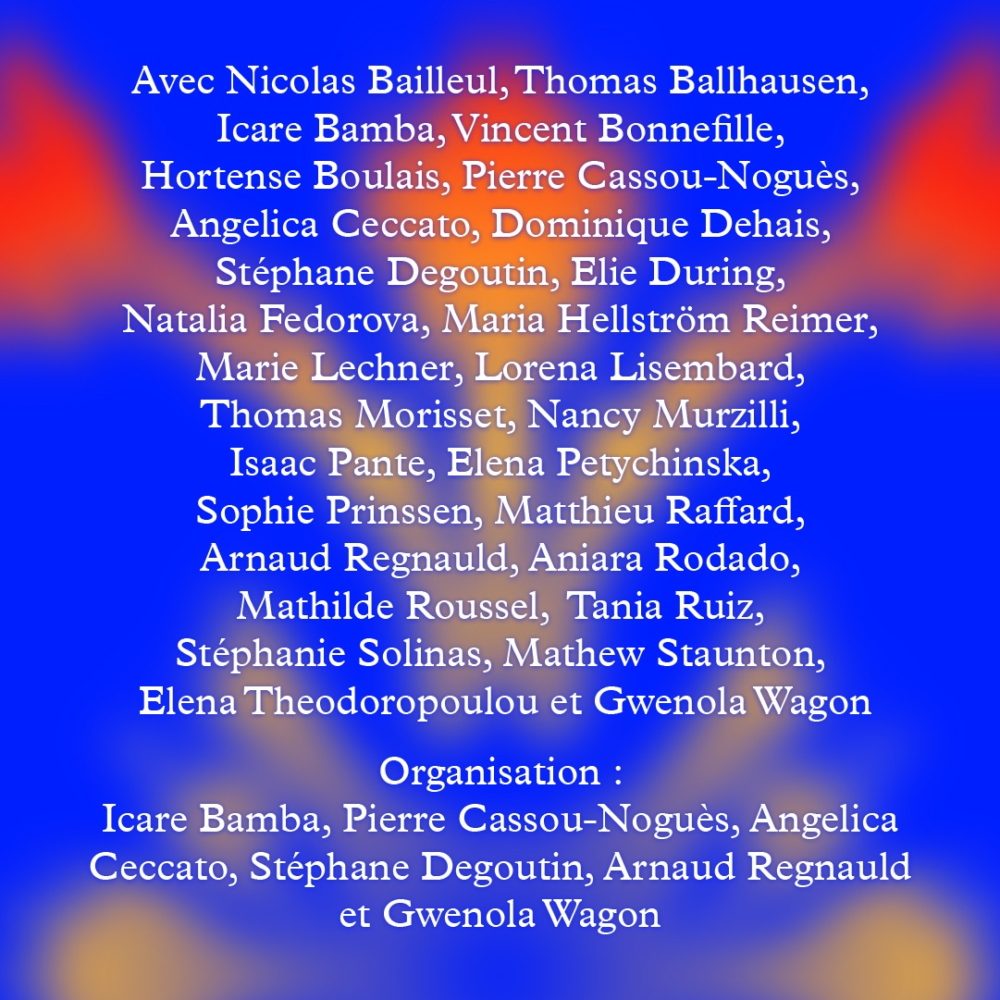
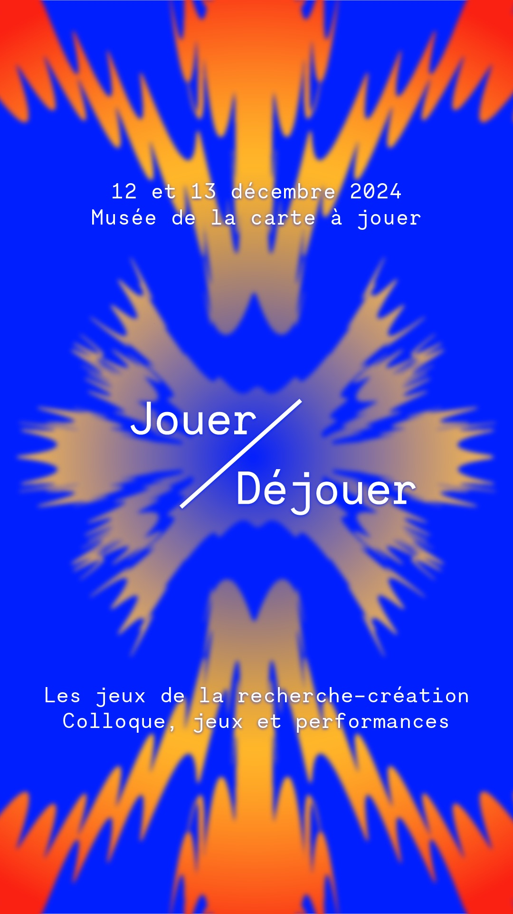

Premiers Feux
Projet d’identité visuelle pour l’exposition des diplômé·e·s 2026 de l’Ensad Nancy. Le feu de circulation, évoqué par des ponctuations graphiques, construit la base de l’identité et se juxtapose avec une iconographie de paysages routiers. Le feu se décline comme ornement sur toute l’identité, sous la forme de constellations de diodes luminescentes. Cette proposition joue sur le caractère ambivalent de la fin d’un cycle étudiant : entre symbole du franchissement d’une ligne d’arrivée et nouveau départ. L’identité ne cherche pas à véhiculer une vision compétitive de ce moment, mais plutôt à ouvrir une multitude d’horizons et de trajectoires possibles, incarnée par les photographies de paysages routiers. Visual identity project for the 2026 Ensad Nancy's graduation exhibition. The traffic light, evoked through graphic punctuations, forms the foundation of the identity and is juxtaposed with imagery of road landscapes. The light is integrated as an ornament throughout the entire identity in the form of LED constellations. This proposal plays on the ambivalent nature of ending a student cycle: a symbol that sits between crossing a finish line and a fresh start. The identity does not seek to convey a competitive vision of this moment, but rather to open up a multitude of possible horizons and trajectories, embodied by the photographs of road landscapes.
2024
affiche poster A3
visuels médias sociaux social media assets
design du site web website design




